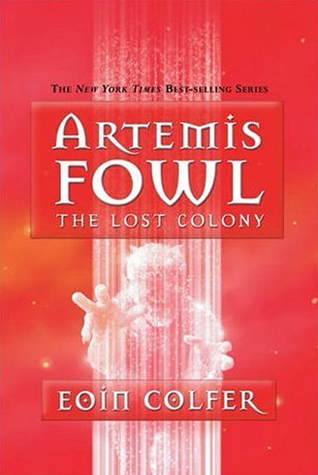

"The Lost Colony"

- Read on 2009-04-30
- Rating: ▲▲▲▲△
- Format: Audio (8 hours 23 minutes)
This installment was a bit geekier than the other books as it delved into another dimension, literally. Reading this book is proving to be pivotal to the following book... so don't start with The Time Paradox. A quick read, and probably more enjoyable than Artemis Fowl 3 and 4.